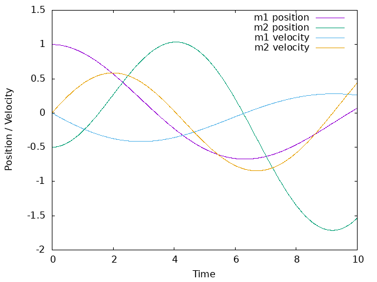

w14 <<
Previous Next >> 如何使用wink
w16
#include <stdio.h>
#include <math.h>
#define TIME_STEP 0.01 // 时间步长
#define SIMULATION_TIME 10.0 // 模拟时间
// 物体的参数
#define m1 2.0
#define m2 3.0
#define k1 0.5
#define k2 1.0
#define k3 1.5
#define c1 0.25
#define c2 0.33
#define c3 0.5
#define X1_initial 1.0
#define X2_initial -0.5
#define V0 0.0
// 计算阻尼力
double dampingForce(double c, double v) {
return -c * v;
}
// 模拟物体运动
void simulateMotion() {
double X1 = X1_initial;
double X2 = X2_initial;
double V1 = V0;
double V2 = V0;
FILE *fp;
fp = fopen("motion_data.txt", "w");
for (double t = 0; t <= SIMULATION_TIME; t += TIME_STEP) {
double F1 = -k1 * (X1 - 0) - c1 * (V1 - 0); // 第一个物体受到的合力
double F2 = -k2 * (X2 - X1) - c2 * (V2 - V1); // 第二个物体受到的合力
double F3 = -k3 * (X2 - 0) - c3 * (V2 - 0); // 第二个物体受到的合力
double a1 = F1 / m1; // 第一个物体的加速度
double a2 = F2 / m2; // 第二个物体的加速度
// 更新速度和位置
V1 += a1 * TIME_STEP;
V2 += a2 * TIME_STEP;
X1 += V1 * TIME_STEP;
X2 += V2 * TIME_STEP;
// 在文件写入时记录 m1 和 m2 的位置和速度数据
fprintf(fp, "%lf %lf %lf %lf %lf\n", t, X1, X2, V1, V2);
}
fclose(fp);
}
int main() {
simulateMotion();
return 0;
}
加上
#include <stdio.h>
int main() {
FILE *gnuplotPipe = popen("gnuplot", "w");
if (gnuplotPipe) {
fprintf(gnuplotPipe, "set terminal png\n");
fprintf(gnuplotPipe, "set output 'motion_plot.png'\n");
fprintf(gnuplotPipe, "set xlabel 'Time'\n");
fprintf(gnuplotPipe, "set ylabel 'Position / Velocity'\n");
fprintf(gnuplotPipe, "plot 'motion_data.txt' using 1:2 with lines title 'm1 position', 'motion_data.txt' using 1:3 with lines title 'm2 position', 'motion_data.txt' using 1:4 with lines title 'm1 velocity', 'motion_data.txt' using 1:5 with lines title 'm2 velocity'\n");
fprintf(gnuplotPipe, "exit\n");
fflush(gnuplotPipe);
pclose(gnuplotPipe);
} else {
printf("Error opening pipe to Gnuplot.\n");
}
return 0;
}
會呈現出

w14 <<
Previous Next >> 如何使用wink